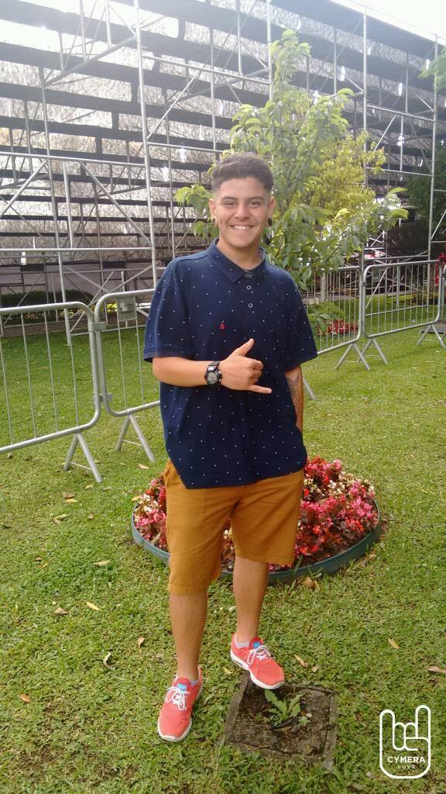

Teste rápido
Aqui você consegue voltar para página anterior PG 001
E aqui você consegue ir para a próxima página 003
Minhas redes Sociais
Quem sou EU ?

Prazer me chamo Vinicius Dias, tenho 22 anos e tenho vontade e desejo de me tornar um programador reconhecido ou que domine diversas linguagens de programação!
Essas são minhas redes sociais!
- 𝄓→INSTAGRAM Me siga pra ficar por dentro de tudo que acontece!
- →TIKTOK Me siga pra ficar por dentro de tudo que acontece!
- →FACEBOOK Me siga pra ficar por dentro de tudo que acontece!